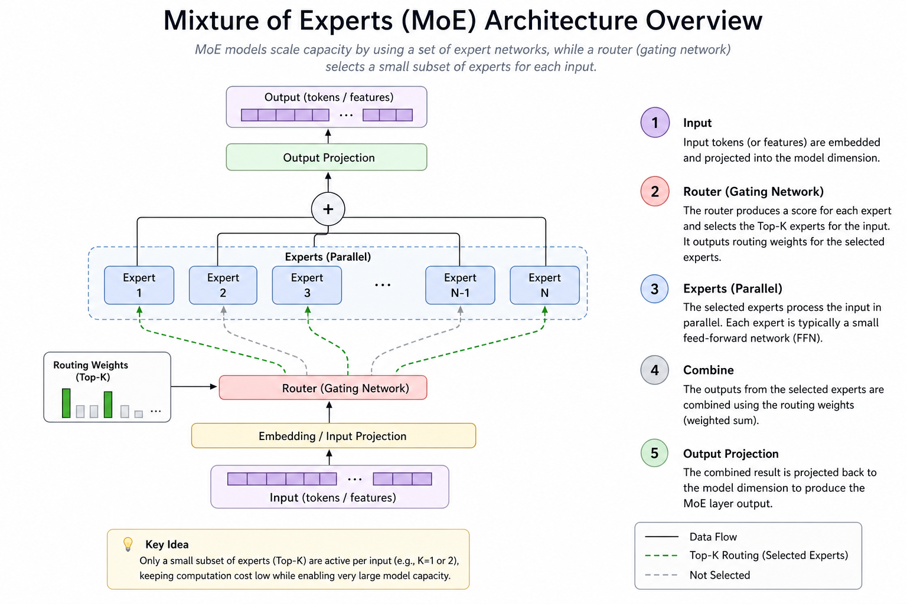
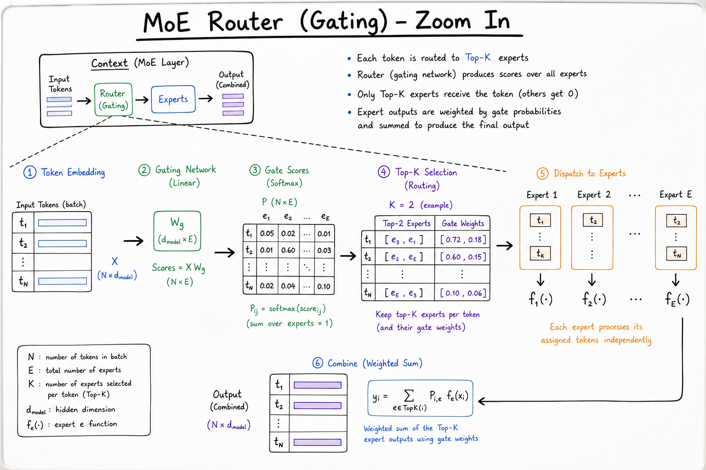
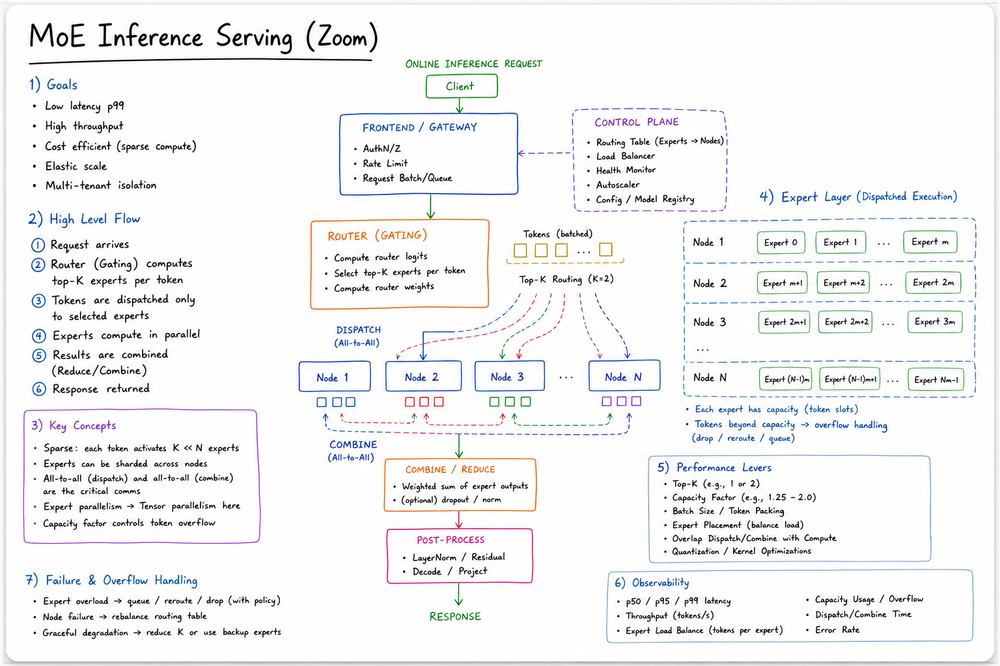

Mixture of Experts // Stretch
Sparse MoE transformers activate a subset of feed-forward “experts” per token via a learned router — massive total parameters with lower compute per forward pass. Mixtral, DeepSeek-MoE, and GPT-4 rumors; serving challenges include expert parallelism and load imbalance.

MoE layer replaces dense FFN with N expert FFNs + router. Each token selects top-k experts (often k=2). Total params = all experts; active params per token ≈ k/N of expert pool + shared attention weights.
01 — What & Why
Problem: Scaling dense LLMs hits diminishing returns — every token activates all FFN parameters. MoE increases model capacity (more specialists) without proportional FLOPs per token.
Functional
- Higher quality per inference dollar for open models (Mixtral 8×7B)
- Specialized sub-networks may emerge (code vs math routing)
- Enables 100B+ total params on consumer GPU clusters for active 10–20B
Non-Functional
- Memory: must store ALL experts on disk/GPU pool even if sparse activate
- Load balance: router collapse starves some experts
- Communication: expert parallelism needs all-to-all GPU transfers
- Determinism: routing adds variance run-to-run at same temperature
Interview anchor: MoE trades parameter count for conditional computation — “47B total, 13B active” is the headline metric interviewers expect you to parse.
01a — Core Concepts
| Term | Definition | Gotcha |
|---|---|---|
| Expert | Standalone FFN sub-network in a layer | Each expert is full-sized (e.g. 7B shard in 8×7B) |
| Router / gate | Linear layer → softmax over experts per token | Can collapse to always pick same experts |
| Top-k routing | Activate k experts (typically 2) per token | Output = weighted sum of expert outputs |
| Active params | Params actually used in one forward pass | ≠ total params; drives inference FLOPs |
| Total params | Sum of all experts + shared layers | VRAM for weights scales with total |
| Load balancing loss | Auxiliary loss encouraging uniform expert usage | Too strong → hurts quality; too weak → dead experts |
| Expert parallelism | Shard experts across GPUs; route tokens remotely | All-to-all bandwidth bottleneck |
| Shared attention | Attention layers usually dense, shared | MoE typically replaces FFN blocks only |
01b — Serving View (Not a Public API)
MoE is a model architecture, not an API protocol. Consumers see the same chat completion interface; routing is internal.
# vLLM / TGI serve Mixtral like any model
python -m vllm.entrypoints.openai.api_server \
--model mistralai/Mixtral-8x7B-Instruct-v0.1 \
--tensor-parallel-size 4 \
--max-model-len 32768
# OpenAI-compatible client — MoE invisible
client.chat.completions.create(
model="mixtral-8x7b",
messages=[{"role":"user","content":"Explain sparse MoE routing."}],
)
Serving internals differ: expert placement, all-to-all kernels. See Model Serving (vLLM) (catalog) and LLM Fundamentals for inference basics.
02 — When to Use / When NOT
| Scenario | MoE? | Alternative |
|---|---|---|
| Self-host best open quality/$ on 4×A100 | Yes | Mixtral, DeepSeek-MoE |
| Minimal VRAM single GPU (24GB) | Hard | Dense 7B/8B quantized |
| Deterministic compliance outputs | Careful | Dense + low temperature; test routing variance |
| Training your own from scratch | Expert only | Needs huge infra; buy API instead |
| Latency-sensitive single-stream | Maybe worse | Routing + comm overhead vs dense 8B |
03 — Architecture
Token x ──► Multi-Head Attention (dense, shared)
│
▼
Router(x) ──► softmax ──► top-k expert indices
│
┌───────────┼───────────┐
▼ ▼ ▼
Expert_1 Expert_2 Expert_N (sparse: only k evaluated)
│ │ │
└───────────┴───────────┘
│
weighted sum ──► next layer
04 — Deep Dive: Routing & Gating
# Conceptual top-2 routing (PyTorch-style pseudo)
router_logits = x @ W_gate # [batch, seq, num_experts]
probs = softmax(router_logits, dim=-1)
topk_weights, topk_ids = topk(probs, k=2, dim=-1)
output = 0
for i in range(k):
expert_out = experts[topk_ids[..., i]](x)
output += topk_weights[..., i:i+1] * expert_out
Failure modes
- Expert collapse: router always picks expert 3 — others untrained
- Token dropping: some implementations drop overflow tokens under load
- Load imbalance: hot experts saturate GPU; cold experts idle

Routing zoom: per-token gate vector, top-2 selection, auxiliary load-balancing loss during training. Sticky note: Mixtral 8×7B activates ~13B of ~47B params per token.
05 — Deep Dive: Training MoE
- Auxiliary loss: encourage uniform expert utilization (Switch Transformer)
- Capacity factor: buffer per expert; overflow tokens dropped or rerouted
- Z-loss on router: stabilize logit magnitudes (ST-MoE)
- Expert count: more experts → harder load balance, better specialization potential
Training MoE at frontier scale is cluster-scale engineering — interview as concept, not something most teams run.
06 — Deep Dive: Model Families
| Model | Experts | Active / Total | Notes |
|---|---|---|---|
| Mixtral 8×7B | 8 FFN experts, top-2 | ~13B / ~47B | Apache 2.0; popular self-host |
| DeepSeek-MoE | Fine-grained experts | High sparsity | Strong open benchmarks |
| Switch Transformer | top-1 routing | Research baseline | Google; capacity factor concept |
| GPT-4 (rumored) | Undisclosed MoE | — | Industry assumes MoE at scale |
07 — Deep Dive: Inference Serving
- Expert parallelism: shard experts across GPUs; dispatch tokens via all-to-all
- Tensor parallelism: within large expert FFN
- Quantization: AWQ/GPTQ on experts separately; watch routing accuracy
- Batching: continuous batching still applies; uneven expert load hurts tail latency

Serving zoom: GPU0 holds experts 0–3, GPU1 holds 4–7; router on attention GPU sends token batches via NCCL all-to-all. Hot expert = straggler; mitigations: expert replication, capacity buffers.
08 — Production & Ops
Monitoring
- Per-expert utilization histogram (detect collapse)
- All-to-all latency percentiles
- Active vs total param memory footprint
When MoE hurts
- Small batch single-user: routing overhead dominates
- Insufficient GPUs: can't fit all experts
09 — Where It Shows Up
- LLM Fundamentals — dense vs sparse scaling context
- Model Serving (vLLM) — MoE kernels, expert parallel
- Distributed Cache HLD — analogy: route request to shard (consistent hashing ↔ expert routing)
- Stock Exchange HLD — hot path load imbalance patterns
10 — Common Pitfalls
- Confusing total params with inference cost: bill FLOPs on active params
- Undersized GPU fleet: all experts must be resident somewhere
- Ignoring router variance: same prompt can hit different experts
- No load balance monitoring in prod: silent quality drift as experts die